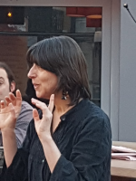

Sono nata l‘11 marzo a Mendrisio.
Da sempre appassionata lettrice¶
- 2015 membro del comitato dell’associazione Albatros, che organizza il festival di letteratura per ragazzi “Storie Controvento”
- 2010 Organizzo con mio marito delle “CENE CON STORIE”
- 2002 Sono narratrice, come mi definisco: raccontastorie, per biblioteche, musei e eventi.
- 2002 Animatrice alla lettura nelle scuole medie del Cantone
-
1990 nasce la mia passione per la narrazione e frequento diversi corsi.
-
Sono socia della società svizzera delle fiabe, sezione della svizzera italiana (Intrecciafole)
-
Ho ottenuto il diploma di maestra della scuola dell’infanzia, in seguito quello di educatrice specializzata alla scuola di Losanna.
In questi anni ho partecipato a corsi di
narrazione con: - Confabula -Mirella Guglielmoni -Claudio Cavalli -Giuseppe Gargiulo -Betty Colombo -Roberto Anglisani
promozione alla lettura con: - Associazione Hamelin -Caterina Ramonda -Gabriela Zucchini -Vera Salton -Matteo Biagi